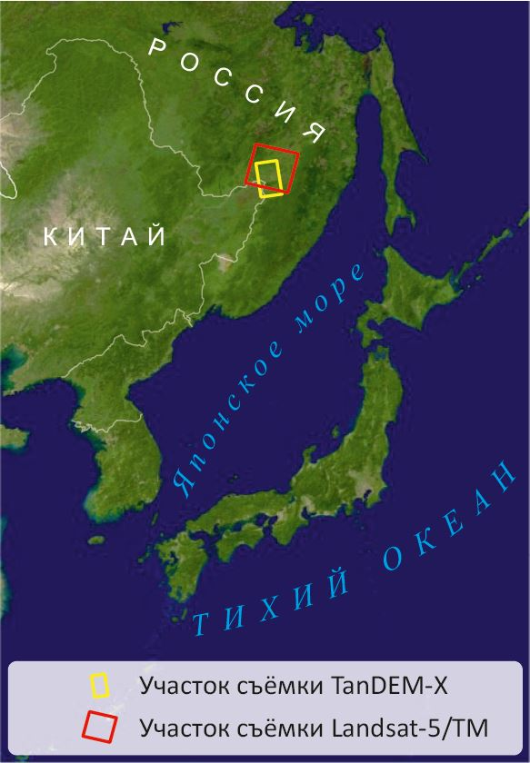
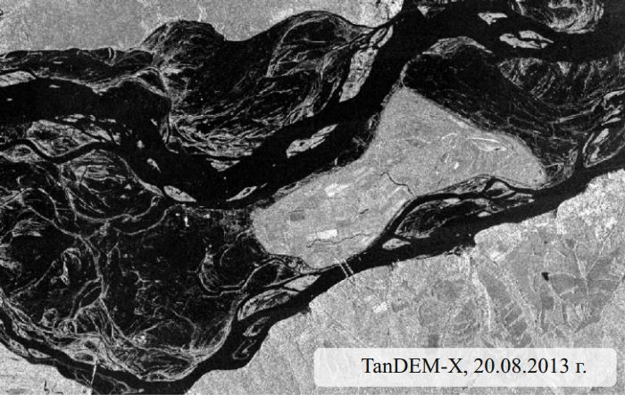
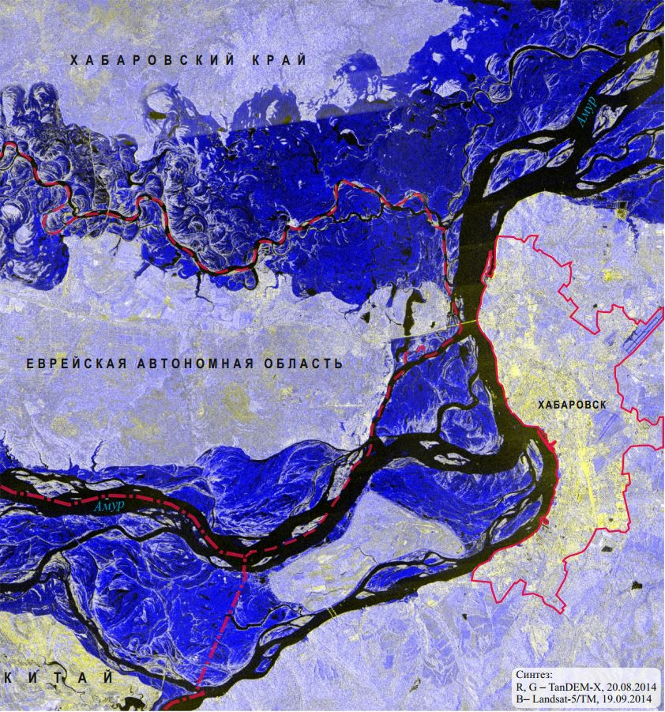
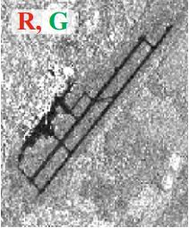

Летом и осенью 2013 года в бассене реки Амур наблюдался сильнейший паводок, причиной которого стали
ливневые дожди, продолжавшиеся около двух месяцев. Наиболее пострадавшие регионы – северо-восточные
провинции Китая, а также Амурская область, Еврейская автономная область и Хабаровский край РФ. В день
проведения космической
радиолокационной съёмки, 20 августа 2013 г., уровень подъёма воды в Амуре у Хабаровска превысил отметку
6,7 м.
Радиолокационные данные являются незаменимым
инструментом при мониторинге паводков и наводнений в силу нескольких причин: независимость получения
изображений от облачности, которая часто сопровождает эти природные явления; возможность наблюдения
независимо от времени суток за счёт генерирования системой собственного излучения; высокая периодичность
съёмки благодаря широкой
полосе обзора и наличию орбитальных группировок из нескольких спутников.
Для выявления территорий, подверженных затоплению,
создано многовременное оптико-радиолокационное синтезированное изображение: красный и зелёный цвета
присвоены радиолокационному снимку TanDEM-X от 20.08.2013 г., а
синий – снимку Landsat-5/TM от 19.09.2010, полученному в
ближнем инфракрасном (ИК) участке спектра.
 

Создание цветного синтезированного оптико-радиолокационного
изображения
Излучение в ближнем ИК участке спектра практически полностью поглощается водой, в связи с чем водные
объекты на снимке в этом диапазоне характеризуются самыми низкими значениями яркости и отображаются чёрным
цветом. Гладкие водные поверхности изображаются чёрным цветом и на радиолокационных снимках ввиду
преобладания зеркального отражения радиоволн и, как следствие, низкого уровня обратного сигнала.


| Стоит отметить, что синим цветом, помимо затопленных
участков, изображаются и взлётно-посадочные полосы в
восточной части г. Хабаровска. Это связано с тем, что гладкие
асфальтированные поверхности дают низкие значения коэффициента обратного рассеяния радиосигнала
и из-за этого имеют низую яркость на радиолокационном снимке, а на снимке в ближнем ИК диапазоне
эти участки характеризуются более
высокой яркостью. |
 |
 |
 |
Неконтролируемая классификация многовременного снимка, составленного из
снимков, полученных в разных диапазонах спектра, позволяет достаточно однозначно выделить следующие три
класса объектов:
1) объекты гидрографии до затопления;
2) территории, затопленные на момент радиолокационной съёмки;
3) объекты, не относящиеся к гидрографии:
населённые пункты, сельскохозяйственные земли, участки с
травянистой и древесно-кустарниковой растительностью.
По результатам неконтролируемой классификации
многовременного снимка автоматически могут быть рассчитаны площади участков, подверженных затоплению.